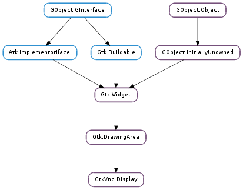

| static | get_option_entries() |
| static | new() |
| client_cut_text(text) | |
| close() | |
| force_grab(enable) | |
| get_depth() | |
| get_force_size() | |
| get_grab_keys() | |
| get_height() | |
| get_keyboard_grab() | |
| get_lossy_encoding() | |
| get_name() | |
| get_pixbuf() | |
| get_pointer_grab() | |
| get_pointer_local() | |
| get_read_only() | |
| get_scaling() | |
| get_shared_flag() | |
| get_width() | |
| is_open() | |
| is_pointer_absolute() | |
| open_addr(addr, hostname) | |
| open_fd(fd) | |
| open_fd_with_hostname(fd, hostname) | |
| open_host(host, port) | |
| request_update() | |
| send_keys(keyvals) | |
| send_keys_ex(keyvals, nkeyvals, kind) | |
| send_pointer(x, y, button_mask) | |
| set_credential(type, data) | |
| set_depth(depth) | |
| set_force_size(enable) | |
| set_grab_keys(seq) | |
| set_keyboard_grab(enable) | |
| set_lossy_encoding(enable) | |
| set_pointer_grab(enable) | |
| set_pointer_local(enable) | |
| set_read_only(enable) | |
| set_scaling(enable) | |
| set_shared_flag(shared) |
| Name | Type | Flags | Description |
|---|---|---|---|
| connection | GVnc.Connection | r | The VNC connection |
| depth | GtkVnc.DisplayDepthColor | r/w | The color depth |
| force-size | bool | r/w | Whether we should define the widget size |
| grab-keyboard | bool | r/w | Whether we should grab the keyboard |
| grab-keys | GtkVnc.GrabSequence | r/w | The key grab sequence |
| grab-pointer | bool | r/w | Whether we should grab the pointer |
| height | int | r | The height of the remote screen |
| local-pointer | bool | r/w | Whether we should use the local pointer |
| lossy-encoding | bool | r/w | Whether we should use a lossy encoding |
| read-only | bool | r/w | Whether this connection is read-only mode |
| scaling | bool | r/w | Whether we should use scaling |
| bool | r/w | Whether we should leave other clients connected to the server | |
| width | int | r | The width of the remote screen |
| Name | Parameters | Return | Description |
|---|---|---|---|
| vnc-auth-credential | GObject.ValueArray | ||
| vnc-auth-failure | str | ||
| vnc-auth-unsupported | int | ||
| vnc-bell | |||
| vnc-connected | |||
| vnc-desktop-resize | int, int | ||
| vnc-disconnected | |||
| vnc-initialized | |||
| vnc-keyboard-grab | |||
| vnc-keyboard-ungrab | |||
| vnc-pointer-grab | |||
| vnc-pointer-ungrab | |||
| vnc-server-cut-text | str |
| Name | Type | Access |
|---|---|---|
| parent | Gtk.DrawingArea | r |
Bases: Gtk.DrawingArea
| Return type: | GLib.OptionEntry |
|---|
| Return type: | Gtk.Widget |
|---|
| Return type: | GtkVnc.DisplayDepthColor |
|---|
| Returns: | the current grab keys |
|---|---|
| Return type: | GtkVnc.GrabSequence |
Get the current grab key sequence
| Returns: | a GdkPixbuf.Pixbuf with the screenshot image buffer |
|---|---|
| Return type: | GdkPixbuf.Pixbuf |
Take a screenshot of the display.
| Return type: | bool |
|---|
| Parameters: |
|
|---|---|
| Return type: |
| Parameters: | keyvals ([int]) – Keyval array |
|---|
Send keyval click events to the display.
| Parameters: |
|
|---|
| Parameters: | depth (GtkVnc.DisplayDepthColor) – |
|---|
| Parameters: | seq (GtkVnc.GrabSequence) – the new grab sequence |
|---|
Set the key grab sequence
| Parameters: | shared (bool) – |
|---|